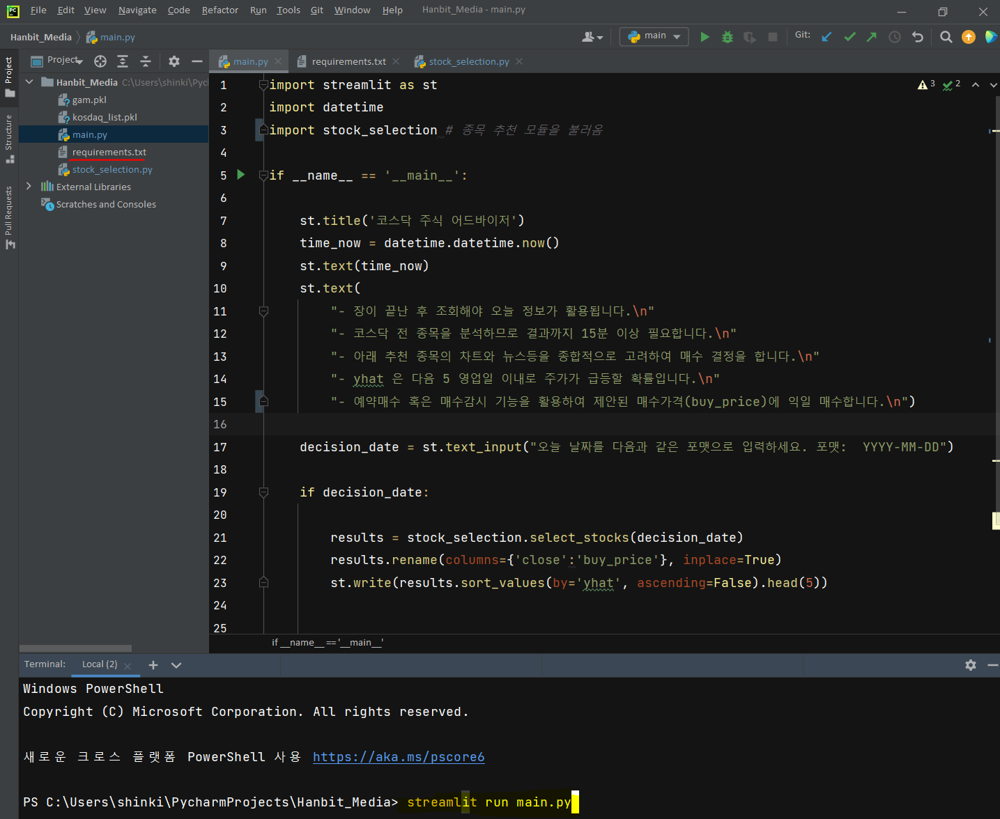

WebApp 로컬에서 구현하기
WebApp 로컬에서 구현하기#
이 책에서 구현하고자 하는 웹앱은 장 마감 후, 당일 날짜를 ‘YYYY-MM-DD’ 형식으로 입력하면 내일 매수 추천 종목이 뜨는 WebApp입니다. 먼저 만들어 놓은 종목 추천 함수를 테스트 해 봅니다. 추천함수에 필요한 데이터는 종목별로 Loop 를 돌리기 위한 ‘kosdaq_list.pkl’ 파일과 모델 데이터 “gam.pkl” 입니다. 이 두 파일이 같은 폴더에 있어야 됩니다.
import FinanceDataReader as fdr
import yfinance as yf
import pandas as pd
import numpy as np
import datetime
import pickle
import time
import datetime
def select_stocks(today_dt):
today = datetime.datetime.strptime(today_dt, '%Y-%m-%d')
start_dt = today - datetime.timedelta(days=100) # 100 일전 데이터 부터 시작 - 피쳐 엔지니어링은 최소 60 개의 일봉이 필요함
print(start_dt, today_dt)
kosdaq_list = pd.read_pickle('kosdaq_list.pkl')
price_data = pd.DataFrame()
for code, name in zip(kosdaq_list['code'], kosdaq_list['name']): # 코스닥 모든 종목에서 대하여 반복
daily_price = fdr.DataReader(code, start = start_dt, end = today_dt) # 종목, 일봉, 데이터 갯수
daily_price['code'] = code
daily_price['name'] = name
price_data = pd.concat([price_data, daily_price], axis=0)
price_data.index.name = 'date'
price_data.columns= price_data.columns.str.lower() # 컬럼 이름 소문자로 변경
# DataReder 코스닥 인덱스 조회 실패시, 야후파이낸스로 추출
# kosdaq_index = fdr.DataReader('KQ11', start = start_dt, end = today_dt) # 데이터 호출
# kosdaq_index.columns = ['close','open','high','low','volume','change'] # 컬럼명 변경
kosdaq_index = yf.download('^KQ11', start = start_dt)
kosdaq_index.columns = ['open','high','low','close','adj_close','volume'] # 컬럼명 변경
kosdaq_index.index.name='date' # 인덱스 이름 생성
kosdaq_index.sort_index(inplace=True) # 인덱스(날짜) 로 정렬
kosdaq_index['kosdaq_return'] = kosdaq_index['close']/kosdaq_index['close'].shift(1) # 수익율 : 전 날 종가대비 당일 종가
merged = price_data.merge(kosdaq_index['kosdaq_return'], left_index=True, right_index=True, how='left')
return_all = pd.DataFrame()
for code in kosdaq_list['code']:
stock_return = merged[merged['code']==code].sort_index()
stock_return['return'] = stock_return['close']/stock_return['close'].shift(1) # 종목별 전일 종가 대비 당일 종가 수익율
c1 = (stock_return['kosdaq_return'] < 1) # 수익율 1 보다 작음. 당일 종가가 전일 종가보다 낮음 (코스닥 지표)
c2 = (stock_return['return'] > 1) # 수익율 1 보다 큼. 당일 종가가 전일 종가보다 큼 (개별 종목)
stock_return['win_market'] = np.where((c1&c2), 1, 0) # C1 과 C2 조건을 동시에 만족하면 1, 아니면 0
return_all = pd.concat([return_all, stock_return], axis=0)
return_all.dropna(inplace=True)
model_inputs = pd.DataFrame()
for code, name, sector in zip(kosdaq_list['code'], kosdaq_list['name'], kosdaq_list['sector']):
data = return_all[return_all['code']==code].sort_index().copy()
# 가격변동성이 크고, 거래량이 몰린 종목이 주가가 상승한다
data['price_mean'] = data['close'].rolling(20).mean()
data['price_std'] = data['close'].rolling(20).std(ddof=0)
data['price_z'] = (data['close'] - data['price_mean'])/data['price_std']
data['volume_mean'] = data['volume'].rolling(20).mean()
data['volume_std'] = data['volume'].rolling(20).std(ddof=0)
data['volume_z'] = (data['volume'] - data['volume_mean'])/data['volume_std']
# 위꼬리가 긴 양봉이 자주발생한다.
data['positive_candle'] = (data['close'] > data['open']).astype(int) # 양봉
data['high/close'] = (data['positive_candle']==1)*(data['high']/data['close'] > 1.1).astype(int) # 양봉이면서 고가가 종가보다 높게 위치
data['num_high/close'] = data['high/close'].rolling(20).sum()
data['long_candle'] = (data['positive_candle']==1)*(data['high']==data['close'])*\
(data['low']==data['open'])*(data['close']/data['open'] > 1.2).astype(int) # 장대 양봉을 데이터로 표현
data['num_long'] = data['long_candle'].rolling(60).sum() # 지난 20 일 동안 장대양봉의 갯 수
# 거래량이 종좀 터지며 매집의 흔적을 보인다
data['volume_mean'] = data['volume'].rolling(60).mean()
data['volume_std'] = data['volume'].rolling(60).std()
data['volume_z'] = (data['volume'] - data['volume_mean'])/data['volume_std'] # 거래량은 종목과 주가에 따라 다르기 떄문에 표준화한 값이 필요함
data['z>1.96'] = (data['close'] > data['open'])*(data['volume_z'] > 1.65).astype(int) # 양봉이면서 거래량이 90%신뢰구간을 벗어난 날
data['num_z>1.96'] = data['z>1.96'].rolling(60).sum() # 양봉이면서 거래량이 90% 신뢰구간을 벗어난 날을 카운트
# 주가지수보다 더 좋은 수익율을 보여준다
data['num_win_market'] = data['win_market'].rolling(60).sum() # 주가지수 수익율이 1 보다 작을 때, 종목 수익율이 1 보다 큰 날 수
data['pct_win_market'] = (data['return']/data['kosdaq_return']).rolling(60).mean() # 주가지수 수익율 대비 종목 수익율
# 동종업체 수익률보다 더 좋은 수익율을 보여준다.
data['return_mean'] = data['return'].rolling(60).mean() # 종목별 최근 60 일 수익율의 평균
data['sector'] = sector
data['name'] = name
data = data[(data['price_std']!=0) & (data['volume_std']!=0)]
model_inputs = pd.concat([data, model_inputs], axis=0)
model_inputs['sector_return'] = model_inputs.groupby(['sector', model_inputs.index])['return'].transform(lambda x: x.mean()) # 섹터의 평균 수익율 계산
model_inputs['return over sector'] = (model_inputs['return']/model_inputs['sector_return']) # 섹터 평균 수익률 대비 종목 수익률 계산
model_inputs.dropna(inplace=True) # Missing 값 있는 행 모두 제거
feature_list = ['price_z','volume_z','num_high/close','num_win_market','pct_win_market','return over sector']
X = model_inputs.loc[today_dt][['code','name','return','kosdaq_return','close'] + feature_list].set_index('code')
with open("gam.pkl", "rb") as file:
gam = pickle.load(file)
yhat = gam.predict_proba(X[feature_list])
X['yhat'] = yhat
tops = X[X['yhat'] >= 0.3].sort_values(by='yhat', ascending=False) # 스코어 0.3 이상 종목만
print(len(tops))
select_tops = tops[(tops['return'] > 1.03) & (tops['price_z'] < 0)][['name','return','price_z','yhat','return', 'kosdaq_return','close']] # 기본 필터링 조건
if len(select_tops) > 1: # 최소한 2개 종목 - 추천 리스크 분산
return select_tops
else:
return None
2022년 4월 1일을 테스트 한 결과 함수가 잘 작동하는 것을 확인할 수 있습니다.
select_tops = select_stocks('2022-04-01')
select_tops.style.set_table_attributes('style="font-size: 12px"').format(precision=3)
2021-12-22 00:00:00 2022-04-01
[*********************100%***********************] 1 of 1 completed
203
| name | return | price_z | yhat | return | kosdaq_return | close | |
|---|---|---|---|---|---|---|---|
| code | |||||||
| 056090 | 에디슨INNO | 1.080 | -1.621 | 0.540 | 1.080 | 0.996 | 2560 |
| 024740 | 한일단조 | 1.062 | -0.823 | 0.355 | 1.062 | 0.996 | 3185 |
| 083660 | CSA 코스믹 | 1.035 | -0.094 | 0.351 | 1.035 | 0.996 | 2080 |
| 122690 | 서진오토모티브 | 1.058 | -0.114 | 0.314 | 1.058 | 0.996 | 3350 |
| 174880 | 장원테크 | 1.090 | -0.366 | 0.305 | 1.090 | 0.996 | 1990 |
파이썬 파일 ‘stock_selection.py’ 만들고 select_stocks() 함수를 복사해 넣습니다. 쥬피터랩을 쓰고 계신다면 File > New > Python File 에서 파일을 하나 만드시고 그 파일에 함수 select_stocks() 를 복사해서 넣으면 됩니다. stock_selection.py 파일을 동일한 폴더에 저장하신 후에, 아래와 같이 import 를 해 봅니다. 그리고 다시 함수를 호출해서 2022년 4월 1일 추천종목을 확인해 봅니다. 이상없이 함수가 호출되는 것을 확인했습니다.
import stock_selection
stock_selection.select_stocks('2022-04-01').style.set_table_attributes('style="font-size: 12px"').format(precision=3)
2021-12-22 00:00:00 2022-04-01
[*********************100%***********************] 1 of 1 completed
203
| name | yhat | close | |
|---|---|---|---|
| code | |||
| 056090 | 에디슨INNO | 0.540 | 2560 |
| 024740 | 한일단조 | 0.355 | 3185 |
| 083660 | CSA 코스믹 | 0.351 | 2080 |
| 122690 | 서진오토모티브 | 0.314 | 3350 |
| 174880 | 장원테크 | 0.305 | 1990 |
이제 main.py 파이썬 파일을 만들겠습니다. main.py 에서는 종목을 추천하는 함수(select_stock)가 있는 stock_selection.py 를 import 하고, 웹앱을 만들어주는 streamlit 도 import 할 것입니다. stock_selection 모듈은 이미 만들었으므로 streamlit 를 설치 후 import 하면 됩니다. 아래와 같이 streamlit 을 설치합니다. (참고 링크 https://anaconda.org/conda-forge/streamlit). 설치를 위해서 먼저 아나콘다 Prompt 을 실행합니다. streamlit 은 pip install streamlit 로도 설치가 가능합니다만, 아나콘다에서 배포하는 패키지를 우선적으로 설치하는 것이 좋습니다. 아래 그림과 타이핑한 후 ‘Enter’ 를 누르시면 자동으로 설치가 됩니다. 참고로 이 책에서는 가상환경에 대하여는 다루지 않도록 하겠습니다. 가상환경이란 프로젝트별로 필요한 파이썬 패키지를 간섭없이 쓸 수 있게 해 줍니다. 이 웹앱 프로젝트는 streamlit 가 필요하지만, 다른 프로젝트는 streamlit 이 필요하지 않을 수 있습니다. 따라서 가상환경을 만들고 가상환경에서 패키지를 설치함으로써 프로젝트 사이에 서로 간섭이 없도록 하는 것이 가장 큰 목적입니다.

이제는 웹앱을 만들 준비가 끝났습니다. 주피터노트북은 셀 단위 명령을 실행함으로써 결과를 빠르게 확인하고 다음 단계로 넘어가는 장점이 있었습니다. 따라서 데이터를 여러 관점으로 분석해야 하는 데이터분석가에게 안성맞춤입니다. 하지만, 큰 프로그램을 웹 브러우저 상에서 실행하는 것은 안정성 면에서 문제가 있습니다. 예를 들어 프로그램이 실행되고 있는 웹브라우저가 죽으면 프로그램도 따라서 정지하게 됩니다. 주피터노트북 상에서는 데이터분석과 모델링을 하고, 만들어진 프로그램의 실행은 PyCharm 이나 Vscode 등의 에디터를 이용을 추천드립니다. main.py 가 있는 폴더에 ‘gam.pkl’, ‘kosdaq_list.pkl’, ‘stock_selection.py’ 파일을 저장합니다. ‘gam..pkl’ 은 예측모델이 저장된 파일이고, ‘kosdaq_list.pkl’ 은 코스닥 종목 리스트가 있는 파일이며 ‘stock_selection.py’ 은 종목 추천 알고리즘이 저장되 파일입니다. main.py 를 PyCharm 에서 아래와 실행합니다. 참고로 requirements.txt 는 현재 로컬에서 작업하고 있는 환경을 다른 곳에 복사하기 위한 라이브러리 정보가 담긴 파일입니다. 로컬에서 웹앱을 테스트하는 데 필요하지는 않습니다. requirements.txt 파일의 용도에 대하여는 나중에 설명드리도록 하겠습니다.

위 코드를 실행하면 새로운 브라우저가 뜨면서 아래와 같은 창이 생깁니다. 아래 박스에 ‘YYYY-MM-DD’ 형식으로 날짜를 입력하고 엔터를 치면 프로그램을 실행합니다. 2022-04-01 를 넣어보겠습니다.

약 15분 후에 아래와 같은 결과값을 볼 수 있습니다. 로컬 호스트에서 잘 작동하는 지 확인합니다. 아래 5 종목만 추천된 이유는 main.py 의 마지막 라인에서
st.write(results.sort_values(by='yhat', ascending=False).head(5))
head(5) 로 스코어(yhat) 가 높은 5 개 종목만 제시하도록 했기 때문입니다.